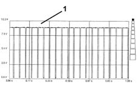

1043AB Graphic analysis of LPG pump operating signal
- Path
- Test > 10 ENGINE UNIT > 1043 LGP TANK AND PIPES > 1043A gpl tank > 1043AB Graphic analysis of LPG pump operating signal
- Kind
- test / check procedure
- Applies to
- engines: 1.6 16v; all production periods; only with equipment: GPOWER
- Interactive page
- https://sloeber94.github.io/elrnDB-fMltpl/en/#/2892370
Applies to: engines: 1.6 16v; all production periods; only with equipment: GPOWER
Set up the diagnostic instrument (Examiner or other instrument) for a graphic voltage assimilation using the 'Voltmeter' function from the 'Instruments' menu.
Set the time base to 2 s.
Connect the instrument's red lead to pin 2 of the pump unit connector and the black lead to earth.
 | Name | Connector |
|---|---|---|
- | Availability. of electric pump and GPL supply. solenoid valve. |
Set the GAS/PETROL selector to 'GAS' mode.
Turn the ignition on.
Press the 'Start' button and check that the Duty Cycle signal displayed is within the specified values as in the attached graph.
